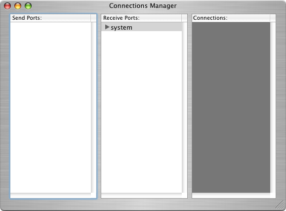
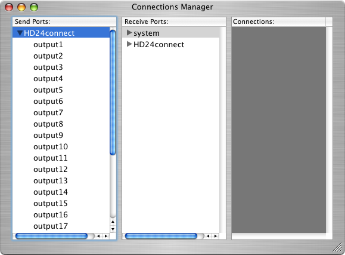

If you wish to stream audio from HD24tools to other OS/X applications, visit http://www.jackosx.com and download JACK from there. Install the package in the usual manner. The package may require you to reboot your computer.
After the installation is complete, start up HD24connect. In the menu Help -> System Info verify that JACK is loaded.
If it is loaded (which is to be expected), run the JackPilot application and click Start to start up the Jack Server.
If this is the case, click Routing in JackPilot. The Connections Manager will show a list of all JACK-enabled applications. As HD24connect is not playing back audio yet, it will still be missing from this list:

After clicking the STOP button on the recording tab, however, the Connection Manager will in fact show HD24connect as a JACK application:

You can now route JACK audio from HD24connect to other applications as you see fit. If you quit JackPilot and click the Stop button in the recorder again, audio playback will revert to default (CoreAudio).